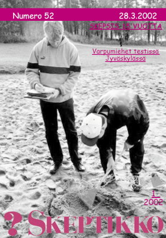
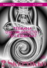
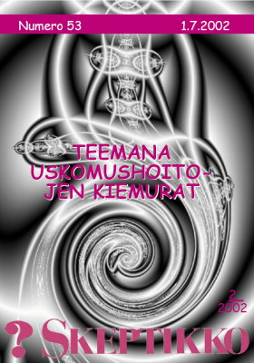
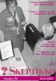
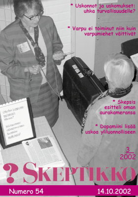
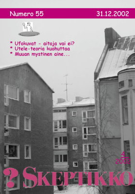

Skeptikko-lehti 2002
Ellei sinulla jo ole tietokoneellasi pdf-muodossa olevan tiedoston lukemiseen tarvittavaa
Acrobat Reader -ohjelmaa, saat sen ladattua maksutta tästä kuvakkeesta:

Skeptikko on Skepsis ry:n neljä kertaa vuodessa ilmestyvä jäsenlehti. Tästä verkkoversiosta löydät lehtien sisällysluettelon, yksittäisiä artikkeleita html-muodossa sekä kokonaiset lehdet pdf-muodossa.
 Skeptikko 52, 1/2002
- Risto K. Järvinen: Pääkirjoitus. Kiivaita tunteita 15-vuotiaan Skepsiksen keskustelupalstalla
- Merja Polvinen: Kaaos ja kirjallisuus. Metafora vai metodologinen harhapolku?
- Vesa Kolhinen: Varpu taipui näyttävästi – aina kun koehenkilöt tiesivät maassa olevan jotain mitä pitäisi havaita
- Risto K. Järvinen: 15 vuotta kriittisyyttä
- Jukka Häkkinen: Puheenjohtajan palsta. Skepsis 15 vuotta
- Skepsiksen mediaryhmä aloittamassa toimintansa
- Veikko Näntö ja Pertti Laine: Kynttilä korvassa
- Mari Hanski: Kummallisia kuvioita Ajasto-kalenterissa
- Risto K. Järvinen: Kuinka minusta tuli Skeptikko. Risto Selin
- Ote Selinin kirjasta ”Ihmeellinen maailma”: Väriterapia
- Kalevi Kuitunen: Kaivattu hakuteos skeptikoille
- Heikki Ervasti: Mitä sanottavaa sosiologilla on paranormaaleista ilmiöistä?
- Matias Päätalo: Keskustelua. Kannattaako oravaa ampua tykillä?
- Heikki Ervasti: Keskustelua. Tarkennuksia antroposofiasta
  Skeptikko 53, 2/2002
- Risto K. Järvinen: Pääkirjoitus. Ilmoittaudun tyrmättäväksi
- Ilkka Toivonen: Uskomushoitojen vapaus ja vastuu
- Hanno Essèn ja Hans Isaksson: Uskomushoitojen energiakäsitteet hataralla pohjalla
- Juha Merikoski: Homeopatia fyysikon näkökulmasta
- Arno Forsius: Samuel Hahnemann (1755–1843). Miten homeopatia keksittiin?
- Risto K. Järvinen: Natsit ja homeopatia
- Risto K. Järvinen: Skeptikot uskonnollisten esineiden museossa
- Matias Päätalo: Outoja väitteitä aurinkokunnastamme
- Risto K. Järvinen: Tunnistettuja lentäviä kohteita
- Risto K. Järvinen: Viranomaiset vimmoissaan. Pyykkilautavatsa kymmenessä minuutissa?
- Bara Normal: Santa Turismos
- Risto Selin: Kirjat. Ihmisiä suden vaatteissa – ja päinvastoin
- Tomi Ryynänen: Rubikin kuutio ratkaisee kaiken?
  Skeptikko 54, 3/2002
- Risto K. Järvinen: Pääkirjoitus. Sattumaa vai magiaa?
- Ilkka Pyysiäinen: Ovatko uskonnot uhka turvallisuudelle?
- Risto K. Järvinen: Myös 20 dollarin seteli ennusti terrori-iskut?
- Bara Normal: Numeroissa on tulevaisuus!
- Vesa Tenhunen: Joensuun koe osoitti: Varpu ei toiminut niin kuin varpumiehet väittivät
- Joe Nickell: Rehellinen kuva aurakuvauksesta
- Risto K. Järvinen: Skepsis esitteli oman aurakameransa
- Jukka Ukkola: Me antiikin sankarit
- Pete Pakarinen: Ruumiistapoistuminen elektrodien avulla
- Pete Pakarinen: Aivojen välittäjäaine näyttää olemattomia merkityksiä: dopamiini lisää uskoa yliluonnolliseen
- Risto K. Järvinen: Astronautti taistelussa huuhaata vastaan
- Ihminen kuussa: salaliittoko sekin? Skeptic Jr. -lehden artikkelia referoi Jouko Koppinen
- Matias Päätalo: Mikseivät humanoidit vastaa?
- Toni Siira: Keskustelua. Ufotutkijoiden pyrittävä tieteelliseen tutkimusotteeseen
 Skeptikko 55, 4/2002
Kaikkien artikkelien © Copyright 2002 Skeptikko-lehti ja kirjoittaja.
Kirjoitukset vapaasti siteerattavissa ja levitettävissä ei-kaupallisiin tarkoituksiin, lähteeksi mainittava kirjoittajan lisäksi Skeptikko-lehti numeroineen.


{kind=link}
{kind=link}
{kind=link}
{kind=link}